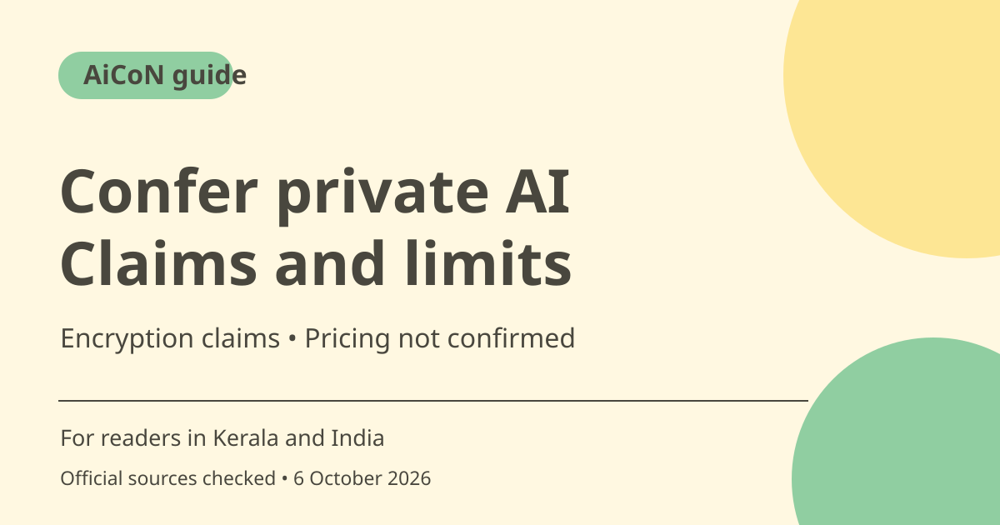

Confer private AI: encryption claims, access and limits
Confer describes an AI assistant with writing, images, web search and memory. Its privacy policy says chats are end-to-end encrypted with keys held on your devices. These are provider claims, not an independent security audit by AiCoN.

What is Confer?
Confer presents a general-purpose AI assistant. Its homepage lists writing, images, web search and memory. The difference it advertises is privacy: encrypted conversations that the operator says it cannot read. A feature listed on a landing page is not a guarantee of quality, allowance or availability on every device.
What does the privacy policy say?
The policy says messages are encrypted before leaving your device, stored encrypted on its servers and decryptable with keys that only you hold. It also says Confer does not use conversations to train AI models or sell personal data. These are statements from Confer. AiCoN did not inspect the running app, audit its cryptography or establish an independent assurance report.
Privacy is broader than chat content
The policy describes account information, authentication tokens and technical material needed to deliver the service. It names Google or Apple sign-in and Stripe payment processing as third-party services with their own policies. Encrypted content does not mean there is no account data or billing record. Optional Google service connections expand the information available to the assistant.
Who can use it?
Published terms set a minimum age of 13 and require parent or guardian permission for users under 18. They describe Google Sign-In, while the newer privacy policy also mentions optional Apple sign-in. Check the available sign-in flow at access time. This guide does not promise an Android app, India-specific rollout or Malayalam capability.
Why consider it in India?
Someone comparing AI assistants may care about who can read stored chats. Confer is an option to investigate, but a privacy claim is not a reason to submit passwords, OTPs, bank details or other highly sensitive material. Protect your device, review permissions and start with non-sensitive tasks. Verify important answers independently.
What was not established?
The earlier short post mentioned confidential computing, reproducible builds and a transparency log. The official pages read for this guide did not establish those technical details, so they are not repeated as facts. A clear public pricing schedule and India-specific membership cost were also not established. Unknown price does not mean free access.
How to use it, step by step
- Open confer.to and read the privacy policy and terms before creating an account.
- Check offered sign-in methods, device support and any membership screen. Confirm charges, trials, renewals and usage limits before continuing.
- Start with a harmless request, such as rewriting a public paragraph, and evaluate the response.
- Review available history and memory settings. Do not assume a homepage explains every control or deletion behaviour.
- Leave optional mail, calendar and file connections off unless you need them and understand the permissions.
- Verify important answers through original sources. Encryption is a privacy claim, not a guarantee of factual accuracy.
Cost, eligibility and limits
| Price | No clear public plan price or free allowance was established from the official pages read. Check the live membership screen; no INR price is invented. |
|---|---|
| Age | At least 13, with parent or guardian permission under 18, according to published terms. |
| Security limits | Provider claims were checked against its own pages, not independently tested. Shared accounts, compromised devices and third-party permissions still matter. |
Frequently asked questions
Is Confer definitely free?
A public free allowance was not established. Check the membership screen.
Does encryption make every answer trustworthy?
No. Privacy and factual accuracy are different. Verify medical, tax, legal and financial answers separately.
Can AiCoN guarantee that the operator cannot read chats?
No. Confer makes that claim in its policy, but AiCoN has not independently audited the service.
Official sources
Checked 6 October 2026. Features and prices can change. This is a guide, not a personal product test.